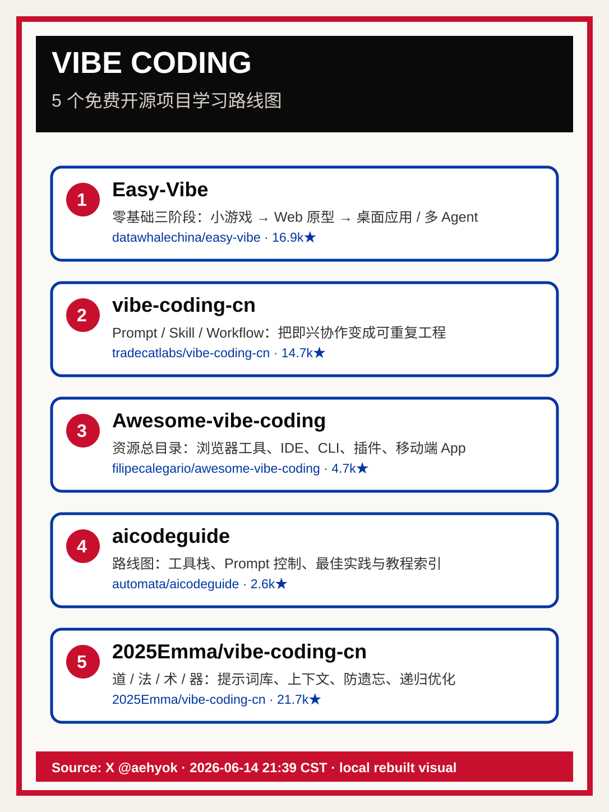

Vibe Coding 开源学习路线
从 X 帖提炼出的 5 个免费项目：把“用 AI 写代码”从随性尝试，拆成入门、工作流、资源索引、路线图与工程化框架。
核心结论：五个仓库覆盖五个学习阶段
原帖作者 AI少年 @aehyok 给出的判断很直接：想从零学习 Vibe Coding，不必先买课；从免费开源项目里挑一个合适的，能打通“提示词 → 工具 → 工作流 → 产品”的任督二脉。
我的整理方式是把五个项目放进一条路径：入门实作、工程化协作、工具目录、路线图导航、方法论框架。这样更容易决定“我现在该从哪一个开始”。

五个开源项目：按“你现在缺什么”选择
1. Easy-Vibe — 零基础入门项目
16.9k★分三阶段：AI 编程小游戏入门、产品创意 + Web 原型、桌面应用与多 Agent 协作。适合还没有稳定 AI 编程手感的人，从“完成一个东西”开始。
github.com/datawhalechina/easy-vibe2. vibe-coding-cn — Prompt / Skill / Workflow 工程化
14.7k★原帖链接已重定向到 tradecatlabs/vibe-coding-cn。三块内容对应 Prompt 提示词、Skill 技能库、Workflow 工作流；重点是规划先行、模块拆分、接口在前。
github.com/tradecatlabs/vibe-coding-cn3. Awesome-vibe-coding — 工具与资源总目录
4.7k★最适合“我想知道有哪些工具”的阶段：浏览器工具、IDE、移动端 App、插件、CLI、AI coding assistant 与参考文章都能在这里做横向检索。
github.com/filipecalegario/awesome-vibe-coding4. aicodeguide — 从哪开始的路线图
2.6k★把 Cursor 等工具栈、Prompt 控制 AI 的工作流、最佳实践、教程与博客整理成路线图。适合做“导航地图”，避免在碎片教程里迷路。
github.com/automata/aicodeguide5. 2025Emma/vibe-coding-cn — 道法术器方法论
21.7k★用“道定方向、法搭架构、术靠预期与实际比对调试、器是工具组合”拆 AI 编程；强调提示词库、固定上下文防遗忘、模块化设计、生成器 + 优化器递归打磨。
github.com/2025Emma/vibe-coding-cn选择规则：按当前瓶颈，而不是按 star 排名
同样叫 Vibe Coding，这五个项目解决的问题并不一样。把它们当作“阶段工具”，比当作“收藏清单”更有效。
如果你还没做过完整作品
- 选 Easy-Vibe
- 目标：按教程跑通最小 demo
- 验收：有一个能分享的 Web / 桌面小作品
如果你每次都靠临场发挥
- 选 vibe-coding-cn
- 目标：沉淀 Prompt / Skill / Workflow
- 验收：同类需求能复用，不再从零聊天
如果你缺工具视野
- 选 Awesome-vibe-coding
- 目标：补齐 IDE / CLI / 插件地图
- 验收：知道不同任务该用哪类工具
如果你缺方法论
- 选 2025Emma/vibe-coding-cn
- 目标：把方向、架构、调试、工具分层
- 验收：AI 产物能稳定迭代，而不是随机变好
一周执行手册：别收藏，跑闭环
Day 1 选 1 个主仓库；读 README；跑通环境
Day 2 复现 1 个最小 demo；记录失败点
Day 3 把 demo 改成自己的小需求
Day 4 抽出 Prompt / Skill / Workflow 模板
Day 5 用第二个工具或仓库补齐短板
Day 6 重跑同类任务，验证复用性
Day 7 写一页复盘：哪些步骤可自动化，哪些必须人工决策原帖要点与互动数据
作者：AI少年 @aehyok；发布时间：2026-06-14 21:39:58（UTC+8）。互动抓取时：12 回复、15 转发、4 引用、93 赞、97 收藏、6145 浏览。
基于 X 帖列出的五个项目与 GitHub 元数据重绘；原始 X 图片媒体地址为 pbs.twimg.com/media/HKxzq3xa0AEYfsP.jpg。